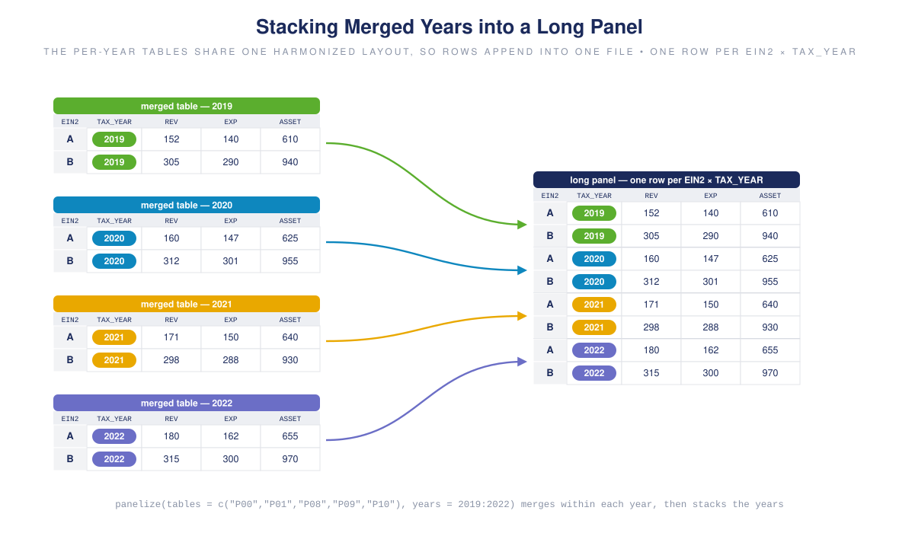
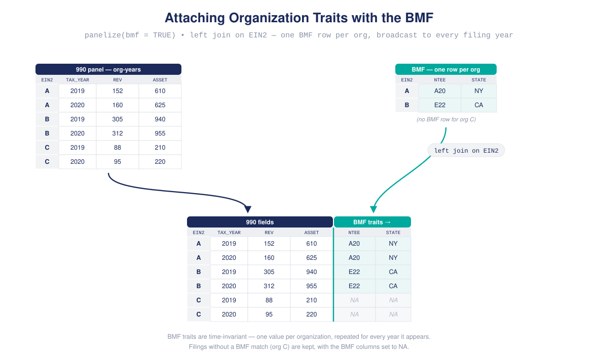

1. Downloading and assembling efile tables
downloading-tables.Rmdpanel990 retrieves IRS 990 efile tables from the NCCS S3 bucket, merges the tables that describe a filing, and stacks years into one panel. This tutorial specifies everything with direct argument values – no sample frame yet.
The download chunks below are shown but not executed in this vignette; they require network access to the NCCS bucket. Run them in a live session.
Table abbreviations
The efile data is split into ~125 tables, each corresponding to a section of the 990. panel990 ships short aliases for the most common ones. Preview them with table_catalog(); below, the catalog is joined with the bundled field_concordance to add a readable name and the number of documented fields per table:
table_catalog() # columns: table, alias, cardinality| alias | table | name | section | fields | cardinality |
|---|---|---|---|---|---|
| P00 | F9-P00-T00-HEADER | Header | Form 990 | 74 | 1x1 |
| P01 | F9-P01-T00-SUMMARY | Summary | Form 990, Part 1 | 41 | 1x1 |
| F9-P01-T00-SUMMARY-EZ | Summary (EZ) | Form 990, Part 1 | 2 | 1x1 | |
| F9-P02-T00-SIGNATURE | Signature | Form 990, Part 2 | 24 | 1x1 | |
| F9-P03-T00-MISSION | Mission | Form 990, Part 3 | 3 | 1x1 | |
| F9-P03-T00-PROGRAM-ONE | Program one | Form 990, Part 3 | 5 | 1x1 | |
| F9-P03-T00-PROGRAM-THREE | Program three | Form 990, Part 3 | 0 | 1x1 | |
| F9-P03-T00-PROGRAM-TWO | Program two | Form 990, Part 3 | 0 | 1x1 | |
| F9-P03-T00-PROGRAMS | Programs | Form 990, Part 3 | 5 | 1x1 | |
| F9-P03-T01-PROGRAMS-OTHER | Programs other | Form 990, Part 3 | 0 | 1xm | |
| F9-P03-T02-PROGRAMS-EZ | Programs (EZ) | Form 990, Part 3 | 1 | 1xm | |
| F9-P04-T00-REQUIRED-SCHEDULES | Required schedules | Form 990, Part 4 | 55 | 1x1 | |
| F9-P04-T00-REQUIRED-SCHEDULES-EZ | Required schedules (EZ) | Form 990, Part 4 | 3 | 1x1 | |
| F9-P05-T00-OTHER-IRS-FILING | Other IRS filing | Form 990, Part 5 | 40 | 1x1 | |
| F9-P06-T00-GOVERNANCE | Governance | Form 990, Part 6 | 40 | 1x1 | |
| F9-P06-T00-GOVERNANCE-EZ | Governance (EZ) | Form 990, Part 6 | 8 | 1x1 | |
| F9-P07-T00-DIR-TRUST-KEY | Directors, trustees, key employees | Form 990, Part 7 | 15 | 1x1 | |
| F9-P07-T01-COMPENSATION | Compensation | Form 990, Part 7 | 26 | 1xm | |
| F9-P07-T01-COMPENSATION-HCE-EZ | Compensation HCE (EZ) | Form 990, Part 7 | 13 | 1xm | |
| F9-P07-T02-CONTRACTORS | Contractors | Form 990, Part 7 | 12 | 1xm | |
| P08 | F9-P08-T00-REVENUE | Revenue | Form 990, Part 8 | 78 | 1x1 |
| F9-P08-T01-REVENUE-PROGRAMS | Revenue programs | Form 990, Part 8 | 6 | 1xm | |
| F9-P08-T02-REVENUE-MISC | Revenue miscellaneous | Form 990, Part 8 | 6 | 1xm | |
| P09 | F9-P09-T00-EXPENSES | Expenses | Form 990, Part 9 | 123 | 1x1 |
| F9-P09-T01-EXPENSES-OTHER | Expenses other | Form 990, Part 9 | 5 | 1xm | |
| P10 | F9-P10-T00-BALANCE-SHEET | Balance sheet | Form 990, Part 10 | 81 | 1x1 |
| P11 | F9-P11-T00-ASSETS | Assets | Form 990, Part 11 | 7 | 1x1 |
| P12 | F9-P12-T00-FINANCIAL-REPORTING | Financial reporting | Form 990, Part 12 | 16 | 1x1 |
| SA-P00-T00-HEADER | Header | Schedule A | 1 | 1x1 | |
| A01 | SA-P01-T00-PUBLIC-CHARITY-STATUS | Public charity status | Schedule A, Part 1 | 29 | 1x1 |
| SA-P01-T01-PUBLIC-CHARITY-STATUS | Public charity status | Schedule A, Part 1 | 9 | 1xm | |
| SA-P02-T00-SUPPORT_SCHEDULE_170 | Support schedule 170 | Schedule A, Part 2 | 60 | 1x1 | |
| SA-P03-T00-SUPPORT_SCHEDULE_509 | Support schedule 509 | Schedule A, Part 3 | 105 | 1x1 | |
| SA-P04-T00-SUPPORT-ORGS | Support orgs | Schedule A, Part 4 | 35 | 1x1 | |
| SA-P05-T00-SUPPORT-ORGS | Support orgs | Schedule A, Part 5 | 79 | 1x1 | |
| SA-P06-T99-SUPPLEMENTAL-INFO | Supplemental info | Schedule A, Part 6 | 2 | supplemental | |
| SB-P01-T01-CONTRIBUTORS | Contributors | Schedule B, Part 1 | 8 | 1xm | |
| SC-P01-T00-LOBBY | Lobby | Schedule C, Part 1 | 10 | 1x1 | |
| SC-P01-T01-POLITICAL-ORGS-INFO | Political orgs info | Schedule C, Part 1 | 11 | 1xm | |
| SC-P02-T00-LOBBY | Lobby | Schedule C, Part 2 | 65 | 1x1 | |
| SC-P03-T00-LOBBY | Lobby | Schedule C, Part 3 | 10 | 1x1 | |
| SC-P04-T99-SUPPLEMENTAL-INFO | Supplemental info | Schedule C, Part 4 | 4 | supplemental | |
| SD-P01-T00-ORGS-DONOR-ADVISED-FUNDS-OTH | Orgs donor advised funds other | Schedule D, Part 1 | 10 | 1x1 | |
| SD-P02-T00-CONSERV-EASEMENTS | Conservation easements | Schedule D, Part 2 | 15 | 1x1 | |
| SD-P03-T00-ORGS-COLLECT-ART-HIST-TREASURE-OTH | Orgs collect art historical treasure other | Schedule D, Part 3 | 11 | 1x1 | |
| SD-P04-T00-ESCROW-CUSTODIAL-ARRANGEMENTS | Escrow custodial arrangements | Schedule D, Part 4 | 7 | 1x1 | |
| SD-P05-T00-ENDOWMENT | Endowment | Schedule D, Part 5 | 41 | 1x1 | |
| SD-P06-T00-LAND-BLDG-EQUIP | Land building equipment | Schedule D, Part 6 | 20 | 1x1 | |
| SD-P07-T00-INVESTMENTS-SECURITIES | Investments securities | Schedule D, Part 7 | 1 | 1x1 | |
| SD-P07-T01-INVESTMENTS-OTH-DERIVATIVES | Investments other derivatives | Schedule D, Part 7 | 2 | 1xm | |
| SD-P07-T01-INVESTMENTS-OTH-EQUITY | Investments other equity | Schedule D, Part 7 | 2 | 1xm | |
| SD-P07-T01-INVESTMENTS-OTH-SECURITIES | Investments other securities | Schedule D, Part 7 | 3 | 1xm | |
| SD-P08-T00-INVESTMENTS-PROG-RLTD | Investments prog related | Schedule D, Part 8 | 1 | 1x1 | |
| SD-P08-T01-INVESTMENTS-PROG-RLTD | Investments prog related | Schedule D, Part 8 | 3 | 1xm | |
| SD-P09-T00-OTH-ASSETS | Other assets | Schedule D, Part 9 | 1 | 1x1 | |
| SD-P09-T01-OTH-ASSETS | Other assets | Schedule D, Part 9 | 2 | 1xm | |
| SD-P10-T00-OTH-LIABILITIES | Other liabilities | Schedule D, Part 10 | 3 | 1x1 | |
| SD-P10-T01-OTH-LIABILITIES | Other liabilities | Schedule D, Part 10 | 2 | 1xm | |
| SD-P11-T00-RECONCILIATION-REVENUE | Reconciliation revenue | Schedule D, Part 11 | 11 | 1x1 | |
| SD-P12-T00-RECONCILIATION-EXPENSES | Reconciliation expenses | Schedule D, Part 12 | 11 | 1x1 | |
| SD-P13-T99-SUPPLEMENTAL-INFO | Supplemental info | Schedule D, Part 13 | 4 | supplemental | |
| SD-P99-T00-RECONCILIATION-NETASSETS | Reconciliation netassets | Schedule D, Part 99 | 10 | 1x1 | |
| SE-P01-T00-SCHOOLS | Schools | Schedule E, Part 1 | 23 | 1x1 | |
| SE-P02-T99-SUPPLEMENTAL-INFO | Supplemental info | Schedule E, Part 2 | 4 | supplemental | |
| SF-P01-T00-FRGN-ACTS | Foreign activities | Schedule F, Part 1 | 10 | 1x1 | |
| SF-P01-T01-FRGN-ACTS-BY-REGION | Foreign activities by region | Schedule F, Part 1 | 6 | 1xm | |
| SF-P02-T00-FRGN-ORG-GRANTS | Foreign org grants | Schedule F, Part 2 | 2 | 1x1 | |
| SF-P02-T01-FRGN-ORG-GRANTS | Foreign org grants | Schedule F, Part 2 | 7 | 1xm | |
| SF-P03-T01-FRGN-INDIV-GRANTS | Foreign individuals grants | Schedule F, Part 3 | 8 | 1xm | |
| SF-P04-T00-FRGN-INTERESTS | Foreign interests | Schedule F, Part 4 | 6 | 1x1 | |
| SF-P05-T99-EXPLANATION-TEXT | Explanation text | Schedule F, Part 5 | 4 | supplemental | |
| SF-P99-T00-FRGN-ORG-GRANTS | Foreign org grants | Schedule F, Part 99 | 1 | 1x1 | |
| SG-P01-T00-FUNDRAISING-ACTS | Fundraising activities | Schedule G, Part 1 | 12 | 1x1 | |
| SG-P01-T01-FUNDRAISERS-INFO | Fundraisers info | Schedule G, Part 1 | 14 | 1xm | |
| SG-P02-T00-FUNDRAISING-EVENTS | Fundraising events | Schedule G, Part 2 | 11 | 1x1 | |
| SG-P02-T01-FUNDRAISING-EVENTS | Fundraising events | Schedule G, Part 2 | 30 | 1xm | |
| SG-P03-T00-GAMING | Gaming | Schedule G, Part 3 | 68 | 1x1 | |
| SG-P04-T99-SUPPLEMENTAL-INFO | Supplemental info | Schedule G, Part 4 | 4 | supplemental | |
| SH-P01-T00-FAP-COMMUNITY-BENEFIT-POLICY | FAP community benefit policy | Schedule H, Part 1 | 91 | 1x1 | |
| SH-P02-T00-FAP-COMMUNITY-BENEFIT-POLICY | FAP community benefit policy | Schedule H, Part 2 | 60 | 1x1 | |
| SH-P03-T00-FAP-COMMUNITY-BENEFIT-POLICY | FAP community benefit policy | Schedule H, Part 3 | 11 | 1x1 | |
| SH-P04-T01-COMPANY-JOINT-VENTURES | Company joint ventures | Schedule H, Part 4 | 6 | 1xm | |
| SH-P05-T00-FAP-COMMUNITY-BENEFIT-POLICY | FAP community benefit policy | Schedule H, Part 5 | 88 | 1x1 | |
| SH-P05-T01-HOSPITAL-FACILITY | Hospital facility | Schedule H, Part 5 | 23 | 1xm | |
| SH-P05-T02-NON-HOSPITAL-FACILITY | Non hospital facility | Schedule H, Part 5 | 8 | 1xm | |
| SH-P05-T99-SUPPLEMENTAL-INFO | Supplemental info | Schedule H, Part 5 | 3 | supplemental | |
| SH-P06-T99-SUPPLEMENTAL-INFO | Supplemental info | Schedule H, Part 6 | 20 | supplemental | |
| SH-P99-T00-FAP-COMMUNITY-BENEFIT-POLICY | FAP community benefit policy | Schedule H, Part 99 | 48 | 1x1 | |
| SI-P01-T00-GRANTS-INFO | Grants info | Schedule I, Part 1 | 1 | 1x1 | |
| SI-P02-T00-GRANTS-US-ORGS-GOVTS | Grants U.S. orgs governments | Schedule I, Part 2 | 2 | 1x1 | |
| SI-P02-T01-GRANTS-US-ORGS-GOVTS | Grants U.S. orgs governments | Schedule I, Part 2 | 15 | 1xm | |
| SI-P03-T01-GRANTS-US-INDIV | Grants U.S. individuals | Schedule I, Part 3 | 6 | 1xm | |
| SI-P04-T99-SUPPLEMENTAL-INFO | Supplemental info | Schedule I, Part 4 | 4 | supplemental | |
| SI-P99-T00-GRANTS-US-ORGS-GOVTS | Grants U.S. orgs governments | Schedule I, Part 99 | 1 | 1x1 | |
| SJ-P01-T00-COMPENSATION | Compensation | Schedule J, Part 1 | 26 | 1x1 | |
| SJ-P02-T01-COMPENSATION-DTK | Compensation dtk | Schedule J, Part 2 | 18 | 1xm | |
| SJ-P03-T99-SUPPLEMENTAL-INFO | Supplemental info | Schedule J, Part 3 | 4 | supplemental | |
| SK-P01-T01-BOND-ISSUES | Bond issues | Schedule K, Part 1 | 11 | 1xm | |
| SK-P02-T01-BOND-PROCEEDS | Bond proceeds | Schedule K, Part 2 | 18 | 1xm | |
| SK-P03-T01-BOND-PRIVATE-BIZ-USE | Bond private biz use | Schedule K, Part 3 | 17 | 1xm | |
| SK-P04-T01-BOND-ARBITRAGE | Bond arbitrage | Schedule K, Part 4 | 19 | 1xm | |
| SK-P05-T01-PROCEDURE-CORRECTIVE-ACT | Procedure corrective act | Schedule K, Part 5 | 2 | 1xm | |
| SK-P06-T99-SUPPLEMENTAL-INFO | Supplemental info | Schedule K, Part 6 | 4 | supplemental | |
| SL-P01-T00-EXCESS-BENEFIT-TRANSAC | Excess benefit transac | Schedule L, Part 1 | 2 | 1x1 | |
| SL-P01-T01-EXCESS-BENEFIT-TRANSAC | Excess benefit transac | Schedule L, Part 1 | 6 | 1xm | |
| SL-P02-T00-LOANS-INTERESTED-PERS | Loans interested pers | Schedule L, Part 2 | 1 | 1x1 | |
| SL-P02-T01-LOANS-INTERESTED-PERS | Loans interested pers | Schedule L, Part 2 | 12 | 1xm | |
| SL-P03-T01-GRANTS-INTERESTED-PERS | Grants interested pers | Schedule L, Part 3 | 7 | 1xm | |
| SL-P04-T01-BIZ-TRANSAC-INTERESTED-PERS | Biz transac interested pers | Schedule L, Part 4 | 7 | 1xm | |
| SL-P05-T99-SUPPLEMENTAL-INFO | Supplemental info | Schedule L, Part 5 | 4 | supplemental | |
| SM-P01-T00-NONCASH-CONTRIBUTIONS | Noncash contributions | Schedule M, Part 1 | 98 | 1x1 | |
| SM-P01-T01-NONCASH-CONTRIBUTIONS | Noncash contributions | Schedule M, Part 1 | 5 | 1xm | |
| SM-P02-T99-SUPPLEMENTAL-INFO | Supplemental info | Schedule M, Part 2 | 4 | supplemental | |
| SN-P01-T00-LIQUIDATION-TERMINATION-DISSOLUTION | Liquidation termination dissolution | Schedule N, Part 1 | 10 | 1x1 | |
| SN-P01-T01-LIQUIDATION-TERMINATION-DISSOLUTION | Liquidation termination dissolution | Schedule N, Part 1 | 15 | 1xm | |
| SN-P02-T00-DISPOSITION-OF-ASSETS | Disposition of assets | Schedule N, Part 2 | 4 | 1x1 | |
| SN-P02-T01-DISPOSITION-OF-ASSETS | Disposition of assets | Schedule N, Part 2 | 15 | 1xm | |
| SN-P03-T99-SUPPLEMENTAL-INFO | Supplemental info | Schedule N, Part 3 | 4 | supplemental | |
| SN-P99-T00-LIQUIDATION-TERMINATION-DISSOLUTION | Liquidation termination dissolution | Schedule N, Part 99 | 2 | 1x1 | |
| SO-T99-SUPPLEMENTAL-INFO | Supplemental info | Schedule O | 4 | supplemental | |
| SR-P01-T01-ID-DISREGARDED-ENTITIES | Id disregarded entities | Schedule R, Part 1 | 17 | 1xm | |
| SR-P02-T01-ID-RLTD-TAX-EXEMPED-ORGS | Id related tax exemped orgs | Schedule R, Part 2 | 18 | 1xm | |
| SR-P03-T01-ID-RLTD-ORGS-TAXABLE-PARTNERSHIP | Id related orgs taxable partnership | Schedule R, Part 3 | 22 | 1xm | |
| SR-P04-T01-ID-RLTD-ORGS-TAXABLE-CORPORATION | Id related orgs taxable corporation | Schedule R, Part 4 | 20 | 1xm | |
| SR-P05-T00-TRANSACTIONS-RLTD-ORGS | Transactions related orgs | Schedule R, Part 5 | 19 | 1x1 | |
| SR-P05-T01-TRANSACTIONS-RLTD-ORGS | Transactions related orgs | Schedule R, Part 5 | 5 | 1xm | |
| SR-P06-T01-UNRLTD-ORGS-TAXABLE-PARTNERSHIP | Unrltd orgs taxable partnership | Schedule R, Part 6 | 20 | 1xm | |
| SR-P07-T99-SUPPLEMENTAL-INFO | Supplemental info | Schedule R, Part 7 | 4 | supplemental |
-
alias – the short token you pass to
tables=(e.g."P08"). - table – the canonical file name it resolves to.
-
fields – how many variables the bundled
field_concordancedocuments for the table. -
cardinality –
1x1is one row per filing (safe to merge side-by-side);1xmis one-to-many (kept separate unless you opt in).
You are not limited to the aliases: any literal table name (for a schedule or a newly published table) is accepted as-is. resolve_tables() shows how a request resolves:
resolve_tables(c("P00", "P08", "SB-P01-T00-CONTRIBUTORS"))
#> request table
#> F9-P00-T00-HEADER P00 F9-P00-T00-HEADER
#> F9-P08-T00-REVENUE P08 F9-P08-T00-REVENUE
#> SB-P01-T00-CONTRIBUTORS SB-P01-T00-CONTRIBUTORS SB-P01-T00-CONTRIBUTORS
#> is_alias cardinality known
#> F9-P00-T00-HEADER TRUE 1x1 TRUE
#> F9-P08-T00-REVENUE TRUE 1x1 TRUE
#> SB-P01-T00-CONTRIBUTORS FALSE 1x1 FALSEThe data source
data_source() configures where files come from. The default points at the current NCCS release, so you rarely change it; pass a local directory to read from disk.
src <- data_source()
src$root
#> [1] "https://nccs-efile.s3.us-east-1.amazonaws.com/public/efile_v2_2/"
src$version
#> [1] "v2_2"The efile release is versioned in the S3 prefix, and version is an argument rather than a constant, so you can pin an analysis to a specific release or reproduce earlier work:
data_source(version = "v2_1")$root
#> [1] "https://nccs-efile.s3.us-east-1.amazonaws.com/public/efile_v2_1/"Passing root explicitly (a local directory or a mirror) overrides version, which is then recorded as NA.
Downloading two tables for two years
download_tables() fetches (or reuses) the CSVs. Give it the years and tables directly:
dl <- download_tables(
years = 2019:2020,
tables = c("P00", "P08"), # header + revenue
cache = "retain", # keep files in `path`; use "temporary" to discard
path = "PANEL990"
)
dl$manifest # one row per table-year: status, bytes, pathEvery table-year is recorded in a manifest, so you can see exactly what was downloaded, reused, or failed.
Downloads print a START line before each transfer and an OK/FAIL line when it settles, so a stalled file is identifiable while it is still running:
-> START [1/4] F9-P00-T00-HEADER 2019
<- OK [1/4] F9-P00-T00-HEADER 2019 337.0 MB in 41.3s @ 8.2 MB/sFailed transfers are retried with exponential backoff, and partial files are deleted between attempts so a truncated download is never mistaken for a valid cache entry. Raise retry_max or timeout on an unreliable connection.
Per-run logs
Each call writes its own log under <path>/logs, named for the run, so repeated runs accumulate instead of overwriting one another:
dl$run_id # identifies this run
dl$log_file # full manifest for this run
retrieval_log(path = "PANEL990") # one row per run, oldest firstRead, merge, and stack
Reading turns the CSVs into data frames; merging joins the tables within a year on the filing keys; stacking binds the years together.
rd <- read_tables(dl) # optionally columns=, filters=
mg <- merge_tables(rd) # join P00 + P08 per year by filing keysmerge_tables() joins the 1x1 tables side-by-side (header fields next to revenue fields, one row per filing) and reports each join in a manifest:

Five core 990 tables joined on the filing keys into one wide row per filing
The years are then stacked into a single data frame:

Merged per-year tables stacked into one long panel with one row per organization-year
The one-shot form
panelize() runs download -> read -> merge -> stack in a single call and returns a panel object. The filing keys (EIN2 / TAX_YEAR / OBJECTID) are assigned automatically:
p <- panelize(tables = c("P00", "P08"), years = 2019:2020)
p
#> <panel> ... rows x ... cols years 2019-2020
#> sample frame: panel[P00,P08 | 2019-2020] (0 rules, ... log entries)
#> panel labels: stale / not computed
df <- as.data.frame(p)Two tables, two years: the package downloads four files, merges the two tables in each year, and stacks 2019 on top of 2020.
Adding BMF fields, then filtering by state
Geography, NTEE, and organization type are not on the 990 itself – they live in the Business Master File (BMF). To filter by state you first join the BMF, then subset. bmf_merge() downloads and attaches the native BMF fields by EIN2:
df <- bmf_merge(df) # appends geo_state_abbr, subsection_code, ntee_*, ...
bmf_vars() # the fields it adds by defaultHow the BMF is retrieved
The unified BMF is published as one parquet file (~640 MB) and one CSV (~3.6 GB) holding identical rows. The default format = "auto" downloads the parquet when DuckDB or arrow is installed, reading only the requested columns; that transfers roughly a fifth of the bytes of the CSV.
With no parquet reader installed, retrieval falls back to the per-state CSV marts (6–380 MB each) and stacks them. Stacking is a plain row bind, not a join, so it is cheap, and each state is downloaded and retried independently – which also makes it the robust choice on a flaky connection, and the efficient way to work with one or two states:
bmf <- bmf_retrieve(states = c("GA", "NC", "SC")) # only these marts
bmf_states() # all 63 published martsThe 63 marts cover the 50 states, DC, the territories, military and freely associated postal codes, and ZZ for unresolved addresses.
The state marts are a separate, lagging build, not a partition of the unified file. At the 2026_08 release they stack to 3,687,435 rows against the unified file’s 3,698,124 – 0.29% fewer – and their bmf_vintage_ym runs about a month behind. Stacking all 63 therefore emits a warning. Use the parquet path when the vintage matters; use the state marts for a state-scoped analysis or when no parquet reader is available.
Transfers are verified against the published build manifest, which also records the vintage of the data you retrieved:
m <- bmf_manifest()
m$vintage # e.g. "2026_08"
m$files[["bmf_unified_geocoded.parquet"]]$row_count
BMF organization traits appended to the right of the 990 panel by a left join on EIN2
Now the state column exists, so a plain base-R subset works:
ga <- df[df$geo_state_abbr == "GA", ]That is the whole manual pipeline: pick tables and years, download, merge, stack, attach the BMF, and filter. The next tutorial shows how a sample frame captures these same choices as a reusable, self-documenting object.